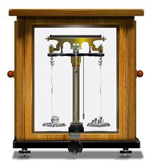

To determine the mass of a body correct to a milligram using a physical balence
Physical balence,weight box and a body whose mass is to be determined
The algebric sum of the moments about a point is zero.So load x load arm = Weight x weight arm
A Physical balence consists of a metal beam B with a central knife edge and it ests on the horizantal flat top of a brass ro passing through a vertical hallow brass pillar P.At the two end of the beam B,two knife edges K1,K2 are provided and from them two scale pans P1 P2 of equal masses are hung down.
The bottom of the brass pillar P rests on the crank of the handle H.By working the handle the rod and hence the beam can be raised or lowered.When the balence is not in use,the beam restson two projections K1 K2 branching out from the upper potion of pillar P and the pans rest on the woden base under the pans. The bottom of the pillar is fixed to the wodden base and an ivory scale I is attached at the bottom of the pillar. A long pointer screwed on to the middle of the beam and the lower end of the pointer swings over the ivory scale.
The wooden base is provided with leveling screws A1 A2 and a plumbline is attached to the pillar P. Nuts N1 N2 are provided at the end of the beam. The balence is enclosed in a wooden case provided with glass doors.
Resting point of a balance is the division on the scale against which the pointer comes to rest after the oscillations of the released beam die down.But it is a long process. So resting point is estimated by noting five consecutive turning points,three on the left side(starting side) and two on the right side.Then calculate the average of th tuning points on the left side and right side.The mean of thse average turning points gives the resting point.
Adjust the levelling screws A1 and A2 such that the base of the balence is horizontal. The nut N1 and N2 are adjusted so that when the beam is released, the pointer oscillates equally on the scale from the central division(10),when the pan are empty.Keeping the pans P1 and P2 empty,release the beam and take five consecutive turning points starting from left as L1, R1, L2, R2, and L3, Take the average of the left turning points[L=\(\frac{L_{1}+L_{2}+L_{3}}{3}\)], turning points(R=\(\frac{R_{1}+R_{2}}{2}\)) and the average of the average turning points (RP=\(\frac{L+R}{2}\)) which gives the zero resting point(Z.R.P).It must be nearly 10.
Place the body in the left pan and sufficient weights are added to the right pan untill the pointer swings symmetrically on either sides of Z.R.P.Then the resting point(R.P-1) is determined repeating the above process.If R.P-1 is less than Z.R.P removes 10 m gm from the right pan and note the resting point. If R.P-1 is higher than Z.R.P add 10 gm to the right pan and note the resting point.Continue addition or removal of weight in steps of 10gm until the two resting points one is lower(LRP) and the other is higer(HRP) resting point than the Z.P.R are obtained.The readings are tabulated and then the mass of the given body correct to a milligram is determined using the following relation.
\(mass\, of \, the\, body\, W=\left \{ mass\,corresponding\,to\,HRP\right \}+0.01\left \{ \frac{H.R.P-Z.R.P}{H.R.P-L.R.P} \right \}\)
\(mass\, of \, the\, body\, W=\left \{ mass\,corresponding\,to\,LRP\right \}-0.01\left \{ \frac{Z.R.P-L.R.P}{H.R.P-L.R.P} \right \}\)
where H.R.P is high resting point than Z.R.P and L.R.P is low resting point than Z.R.P.